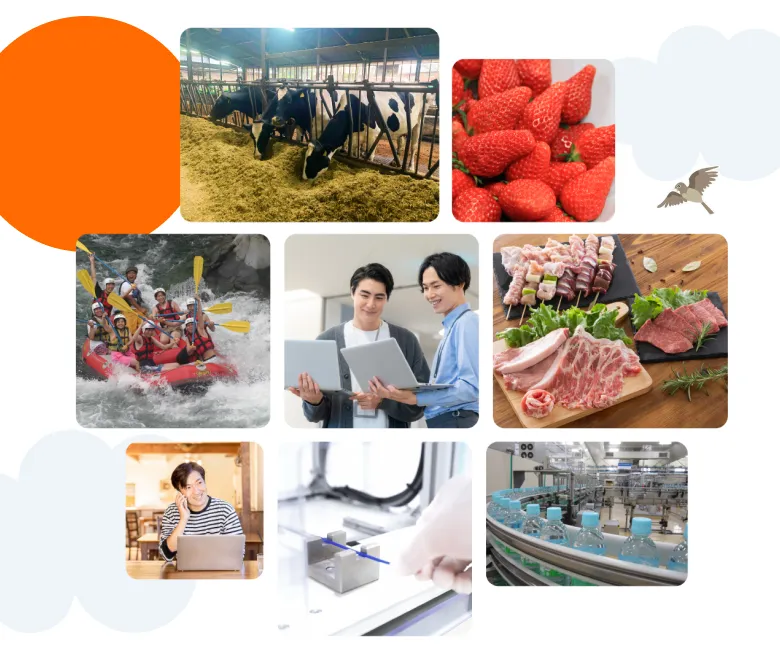
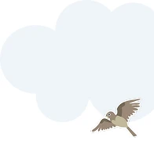
新規事業に取り組む企業へ
事業フィールドに、
富士宮という選択肢。
富士宮市には、新しい商品やサービスを生み出すための、
多様な地域資源と産業があります。
富士宮から、新しい事業の可能性を広げてみませんか。
富士宮市が選ばれる理由
東京から約2時間。
富士山の
麓に広がるビジネスフィールド
富士山の水や自然、農業・酪農、製造業、観光など、地域にあるさまざまな資源が、
新しいビジネスの土台になっています。
-
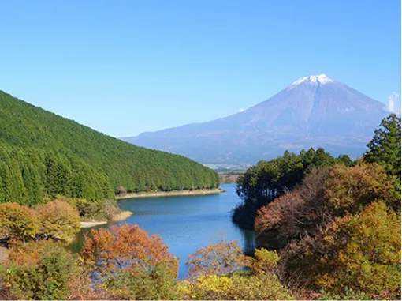
温暖な気候と豊富な自然環境
富士宮市は、日本一の富士山と雄大な自然環境があります。1年を通して温暖な気候なのでサテライトオフィスにぴったりです。
-
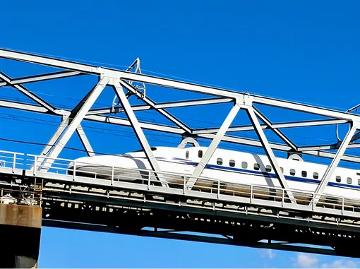
東京都心まで約2時間
自然環境が豊富にありながら、都市部からの距離も非常に近く市内から都市部へ通勤している人も多く存在します。
-
充実のインターネット環境
市内全域に光回線が通っており、インターネット環境の心配をする必要はありません。
FUJINOMIYA FIVE FIELDS
富士宮の5つの可能性
食、製造、自然、観光、地域課題。
富士宮市の地域資源や産業を、
企業が新しい商品・サービスをつくり、試すための
5つのフィールドとして活用できます。
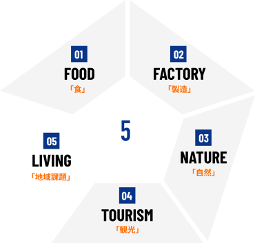
-
01
FOOD FIELD食
富士山の豊かな水に恵まれ、農業・酪農・畜産・養鶏・養鱒など、多様な一次産業が盛んです。地域素材を活用した商品開発から、生産技術、スマート農業、食品加工、アップサイクルまで、新たな食のビジネスにつなげられます。
-
02
FACTORY FIELD製造
市内には数百の製造事業所が集積。既存の工場をフィールドに、AI画像検査、IoT、ロボティクス、省人化、設備保全など、製造現場の課題に向き合うサービスの開発・実証ができます。
-
03
NATURE FIELD自然
富士山、高原、森林、農地、河川など、さまざまな自然環境があります。ドローンやモビリティ、通信、森林管理、環境センシング、再生可能エネルギーなど、自然を活かした技術やサービスの実証に活用できます。
-
04
TOURISM FIELD観光
国内外から多くの観光客が訪れるため、観光DXや多言語AI、キャッシュレス、MaaS、アウトドア製品など、観光客の移動や滞在、現地での体験をより良くするサービスや商品の実証ができます。
-
05
LIVING FIELD地域課題
人口減少、高齢化、人手不足、防災など、多くの地域に共通する地域課題があります。地域の中でサービスや技術を試し、そこで得た成果を他の地域へ展開することもできます。
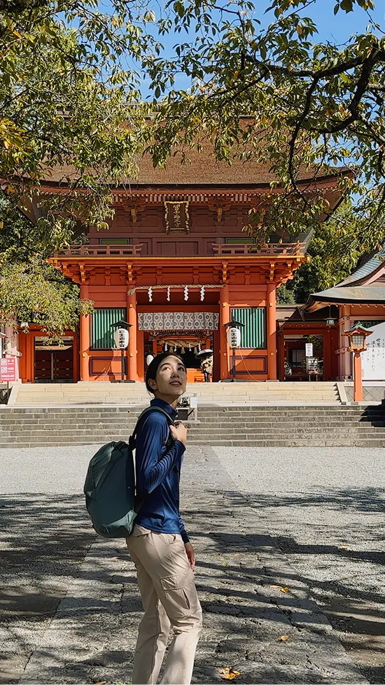
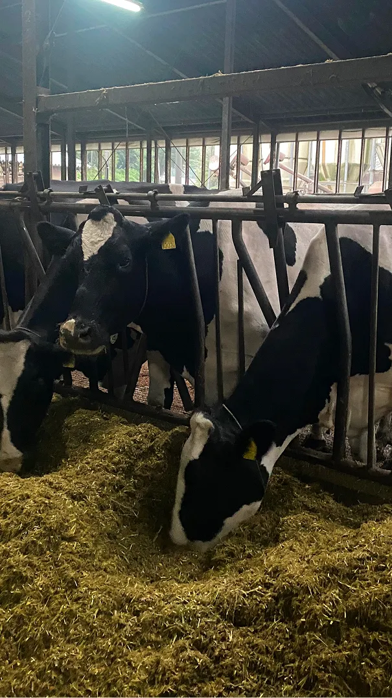
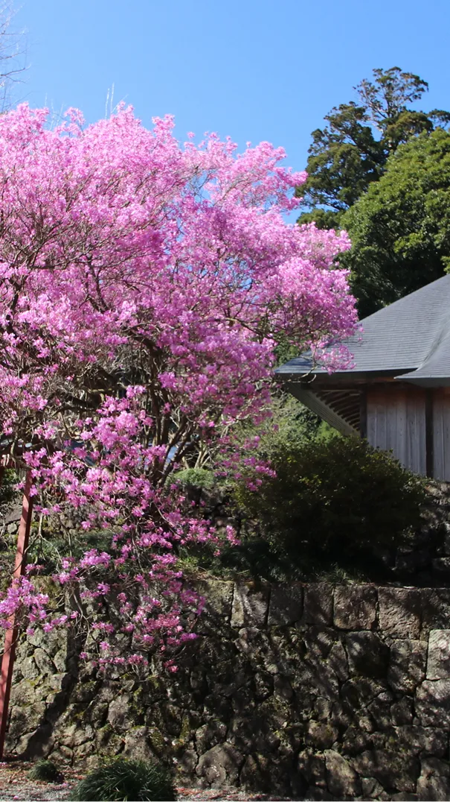
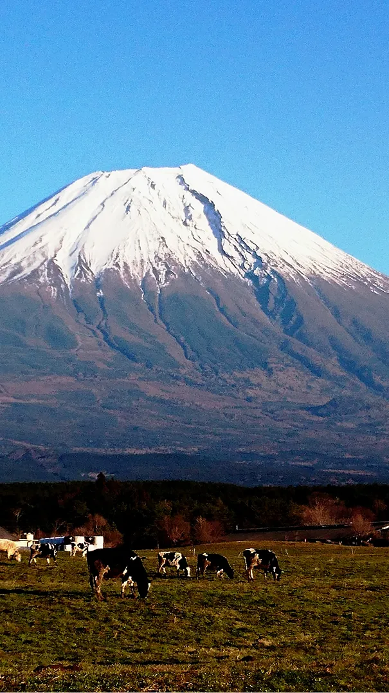
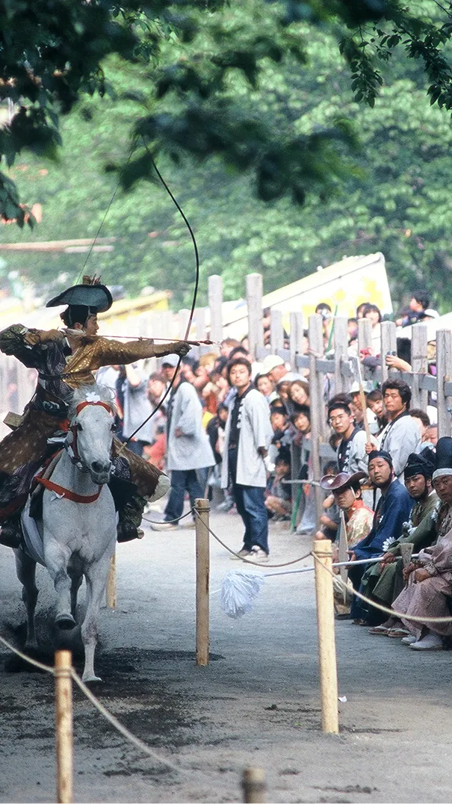
富士宮のビジネス環境を見る
自然、農業・酪農、製造業、観光など、富士宮の地域資源や産業を紹介。
新しい事業や実証につながる環境をご覧いただけます。
富士宮で出来ること
地域資源や産業を活かしたビジネスの可能性を、さまざまなテーマから紹介しています。
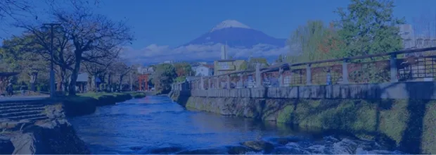
お知らせ
- 企業向け「富士宮フィールドツアー」を開催します これはじゅうもじですこれはじゅうもじですこれはじゅうもじですこれはじゅうもじですこれはじゅうもじですこれはじゅうもじですこれはじゅうもじですこれはじゅうもじです
- 実証実験・地域連携プロジェクトの相談受付を開始しました これはじゅうもじですこれはじゅうもじですこれはじゅうもじですこれはじゅうもじですこれはじゅうもじですこれはじゅうもじですこれはじゅうもじですこれはじゅうもじです
- サテライトオフィス開設支援制度を更新しました これはじゅうもじですこれはじゅうもじですこれはじゅうもじですこれはじゅうもじですこれはじゅうもじですこれはじゅうもじですこれはじゅうもじですこれはじゅうもじです
- 地域企業と進める食品開発プロジェクトを公開しました これはじゅうもじですこれはじゅうもじですこれはじゅうもじですこれはじゅうもじですこれはじゅうもじですこれはじゅうもじですこれはじゅうもじですこれはじゅうもじです
- 首都圏企業との共創ミートアップ開催レポート これはじゅうもじですこれはじゅうもじですこれはじゅうもじですこれはじゅうもじですこれはじゅうもじですこれはじゅうもじですこれはじゅうもじですこれはじゅうもじです
よくある質問
本社を移転せず、富士宮市に拠点を持つことはできますか？
はい、可能です。
本社を移転せず、富士宮市にサテライト拠点や活動拠点を設けることができます。富士宮駅前には、住所登記が可能なコワーキングスペースもあります。まずは最小限のコストで拠点を構え、地域との関わりを少しずつ広げていく、といったスタートも可能です。
まずはPoCや地域との連携から始めることもできますか？
はい、可能です。
富士宮市には、企業や地域、自然環境など、サービスや技術を試すさまざまなフィールドがあります。「いきなり拠点を開設するのではなく、まずは地域で実証実験をしてみたい」といったご相談も歓迎しています。事業内容や実証したいテーマを伺いながら、地域との接点づくりをサポートします。
自社のサービスを試せる場所や企業を紹介してもらえますか？
はい。事業内容やご希望を伺ったうえで、可能な範囲でご紹介・調整します。
富士宮市内には、さまざまな業種の企業や地域資源があります。「こんな場所でサービスを試してみたい」「こうした課題を持つ企業と連携したい」など、まずはアイデア段階でもご相談ください。内容に応じて、実証フィールドや地域企業などとの接点づくりを一緒に検討します。
富士宮市には、どのようなオフィスや物件がありますか？
一般的なオフィスビルのテナントは多くありませんが、空き店舗などの遊休不動産を活用した拠点づくりが可能です。富士宮市では、既存の空き店舗などを活用して、事業所や店舗として利用できる物件を探すことができます。また、まずはコワーキングスペースに入居して住所登記を行うなど、事業の成長段階に合わせて段階的に拠点をつくる方法もあります。物件探しについても、まずはお気軽にご相談ください。
拠点を開設する際に、利用できる支援や補助制度はありますか？
はい。拠点の開設や本社機能の移転・拡充に活用できる制度があります。
富士宮市では、対象エリアで空き店舗等に出店する場合、改装費や建築費、備品購入費などの一部を補助する制度があります。また、静岡県では、本社機能の移転・拡充を行う企業を対象に、一定の要件を満たす場合、税制上の優遇措置などを受けられる制度があります。制度の対象や要件は事業内容・立地場所などによって異なりますので、活用を検討される場合は、まずはご相談ください。
分からないことがあったら、どこに問い合わせればいいですか？
まずは富士宮市商工振興課までお気軽にお問い合わせください。
「富士宮市に拠点を持ちたいけれど、何から始めればいいか分からない」という段階でも大丈夫です。拠点開設、PoC・実証実験、地域企業との連携、物件、各種支援制度など、ご相談内容に応じて必要な情報をご案内します。まずはお気軽にお問い合わせください。